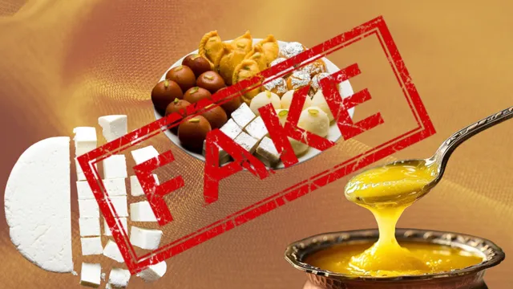

Fake goods and adulterated goods
Fake Goods
Fake goods are goods that are not original. They are imitations of real products made to deceive people. These goods are usually made with cheap materials and do not last long.

These are completely false or imitation products made to look like the real ones, but they are not real at all.
- They try to copy the brand name, look, and packaging of an original product.
- They are not made by the original company, but by people trying to deceive buyers.
Examples of fake goods include:
- Fake designer clothes and shoes
- Fake creams and soaps.
- Fake paints and chemicals.
- Fake art and craft materials.
- Fake food items and drinks.
Meaning of Adulterated Goods
Adulterated goods are goods that have been mixed with other substances to increase their quantity. They are usually mixed with harmful or low-quality materials, which make them dangerous for use.
These are real goods that have been mixed with something else, usually to increase the quantity or reduce the quality.
- The product started off as real, but someone added another substance to it (which may be harmful or useless).
- Adulteration is like spoiling or diluting a real product.
Examples of adulterated goods include:
- Food mixed with sand or stones.
- Palm oil mixed with colour or engine oil.
- Milk mixed with flour or starch.
- Glue mixed with water.
- Paint mixed with kerosene.
Reasons Why People Produce Fake and Adulterated Goods
- To Make Quick Money – They want to get rich without doing honest work.
- Greed – Some sellers want more profit, so they cheat.
- Lack of Punishment – When there are no serious penalties, people continue producing fake things.
- Ignorance of Consumers – Some people don’t know how to check original from fake.
- High Cost of Original Products – Because real goods are expensive, people settle for cheaper fakes.
Dangers of Fake and Adulterated Goods
- They can cause sickness or death.
- They do not last long.
- They can damage people’s skin or body.
- They can spoil the name of the user or producer.
- They waste people’s money.
How to Identify Fake and Adulterated Goods
- By checking the packaging and label
- By checking for NAFDAC registration number.
- By comparing with the original product.
- By buying from trusted and registered sellers.
- By smelling or testing (for some goods like glue or food)
How to Avoid Fake and Adulterated Goods
- Buy goods from well-known shops and supermarkets.
- Avoid buying very cheap items that look suspicious.
- Always check the expiry date on products.
- Report sellers of fake goods to the authorities.
- Educate others about dangers of fake goods
How to Stop Fake and Adulterated Goods
- Educate the public on how to identify fake goods.
- Report sellers of fake items to the authorities.
- Buy only from trusted shops or supermarkets.
- Check expiry dates, labels, and NAFDAC number.
- Support local manufacturers making original goods.
Government Agencies That Help Fight Fake and Adulterated Goods
- NAFDAC – National Agency for Food and Drug Administration and Control - They control the quality of food, drinks, and drugs.
- SON – Standards Organisation of Nigeria -They ensure products meet correct standards.
- NDLEA – National Drug Law Enforcement Agency - They fight fake or illegal drugs.
- Consumer Protection Council (CPC) – They protect consumers from being cheated.
- Customs Service – They help stop the importation of fake goods at the border.